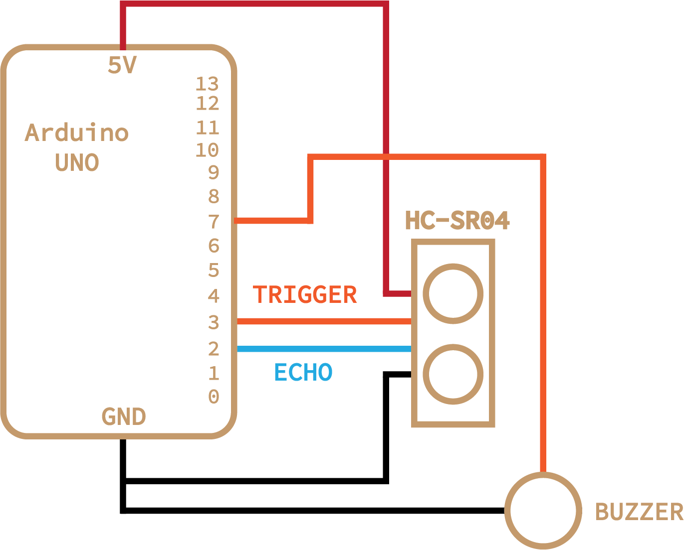
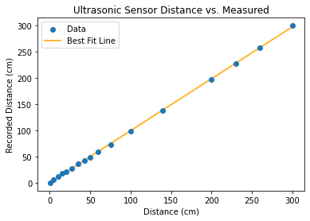
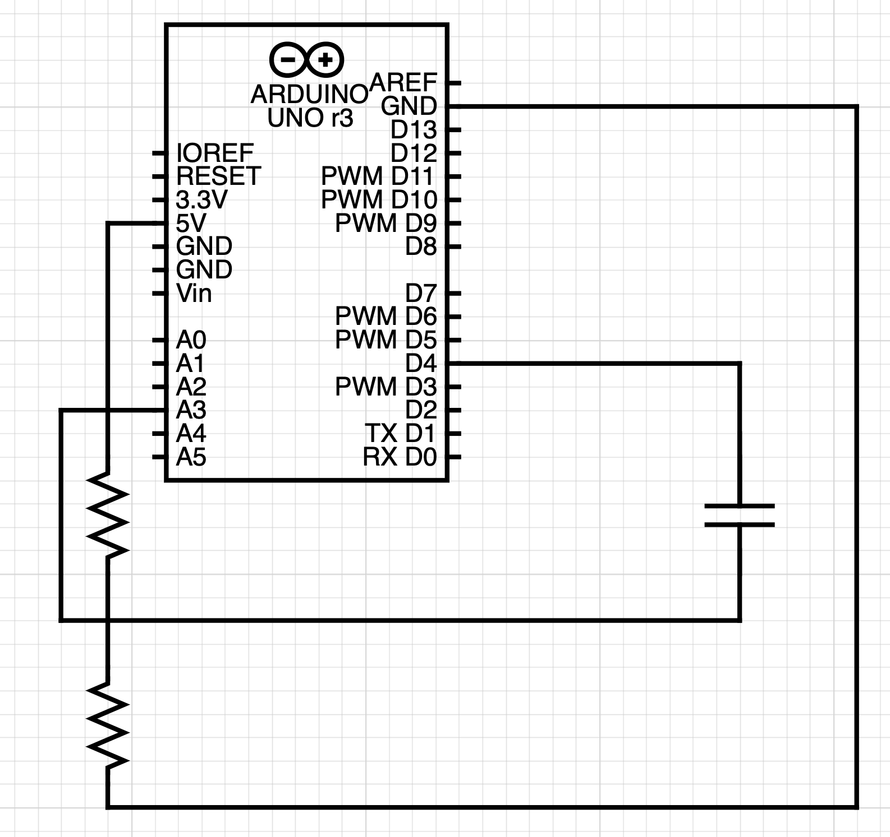
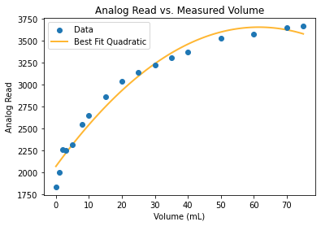
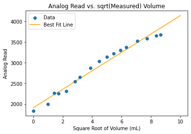

Week 6: Electronic Input Devices
Outline:
This week, we worked with sensors to translate between physical quantities and electrical signals.
Resistive Sensor:
One of my classmates, Andrei, had spent the previous week working with an ultrasonic sensor. The HC-SR04 sends out a pulse and then receives it to estimate the distance of an object from the sensor. I had an idea of using this to create a theremin-like instrument. With code, I segmented up distances within a meter range into different notes; by placing your hand in any one of these ranges, the note corresponding to the region will be played on a buzzer. See the schematic below.
The system was controlled with the following code:
// ---------------------------------------------------------------- //
// Ultrasonic sensor code adapted by Chase Van Amburg
// Arduino Ultrasoninc Sensor HC-SR04
// Re-writed by Arbi Abdul Jabbaar
// Using Arduino IDE 1.8.7
// Using HC-SR04 Module
// Tested on 17 September 2019
// ---------------------------------------------------------------- //
#define echoPin 2 // attach pin D2 Arduino to pin Echo of HC-SR04
#define trigPin 3 //attach pin D3 Arduino to pin Trig of HC-SR04
int tonePin = 7;
int sound;
int pitch;
int new_pitch;
unsigned long currentMillis;
unsigned long previousMillis = 0;
// defines variables
long duration; // variable for the duration of sound wave travel
int distance; // variable for the distance measurement
void setup() {
pinMode(trigPin, OUTPUT); // Sets the trigPin as an OUTPUT
pinMode(echoPin, INPUT); // Sets the echoPin as an INPUT
Serial.begin(9600); // // Serial Communication is starting with 9600 of baudrate speed
Serial.println("Ultrasonic Sensor HC-SR04 Test"); // print some text in Serial Monitor
Serial.println("with Arduino UNO R3");
}
void loop() {
currentMillis = millis();
if (currentMillis-previousMillis > 60) {
previousMillis = currentMillis;
// Clears the trigPin condition
digitalWrite(trigPin, LOW);
delayMicroseconds(2);
// Sets the trigPin HIGH (ACTIVE) for 10 microseconds
digitalWrite(trigPin, HIGH);
delayMicroseconds(10);
digitalWrite(trigPin, LOW);
// Reads the echoPin, returns the sound wave travel time in microseconds
duration = pulseIn(echoPin, HIGH);
// Calculating the distance
distance = duration * 0.034 / 2; // Speed of sound wave divided by 2 (go and back)
// Displays the distance on the Serial Monitor
Serial.print("Distance: ");
Serial.print(distance);
Serial.println(" cm");
if (distance < 20) {distance = 0;}
if (distance > 90) {distance=-1; }
if (distance == 0) {
noTone(tonePin);
}
else if (distance > 0) {
new_pitch = findPitch(distance);
if (new_pitch != pitch) {
pitch = new_pitch;
tone(tonePin, pitch);
}
}
}
}
double notes[] = {261.63, 293.66, 329.63, 392.00, 440.00, 493.88, 523.25};
int start = 30;
int interval = 8;
int findPitch(int sound) {
if (sound < start) {
return notes[0];
}
else if (sound < start+interval) {
return notes[1];
}
else if (sound < start+2*interval) {
return notes[2];
}
else if (sound < start+3*interval) {
return notes[3];
}
else if (sound < start+4*interval) {
return notes[4];
}
else if (sound < start+5*interval) {
return notes[5];
}
else {
return notes[6];
}
}
When calibrating the system, I tried using both my own send and receive code, as well as a pre-written library. Both were working, but I decided to use the library for calibration to see how good it was (whereas with my capacitive sensor, calibration was written from scratch). Below shows a graph of the distance recorded by the HC-SR04 versus the distance I measured with meter sticks.
The library is really quite good! Definitely not perfect, but within a centimeter or so for most ranges. The major problem which is not reflected in this graph is variation of the reported value. Variation is small, but led to a lot of rapid shifting of notes in my simplified theremin setup. This could be resolved by setting a small timer after each note change if I decide to develop this further.
Capacitive Sensor:
I've been messing around with the idea of a fountain for a little while, so I wanted to use capacitance as a measure for water. I modeled my design after an example in class, although applied to a plastic bottle rather than a paper cup. This sensor could detect when water levels in the small fountain get too low, either due to evaporation or a leak. It could both stop the pump from running and wasting electricity as well as send an alert to the fountain owner (me). Here it is, and here is the associated code:

long result; //variable for the result of the tx_rx measurement.
int vol; //variable for conversion of tx_rx to volume
int analog_pin = A3;
int tx_pin = 4;
unsigned long currentMillis;
unsigned long previousMillis = 0;
void setup() {
pinMode(tx_pin, OUTPUT); //Pin 4 provides the voltage step
Serial.begin(9600);
}
void loop() {
currentMillis = millis();
if (currentMillis-previousMillis > 1000) {
previousMillis = currentMillis;
result = tx_rx();
vol = map(result, 2000, 3670, 0, 75);
if (vol < 0) {vol = 0;}
if (vol > 75) {vol = 75;}
// Mapping found by experimental testing
Serial.println(result);
Serial.println(vol);
}
}
long tx_rx(){ // Function to execute rx_tx algorithm and return a value
// that depends on coupling of two electrodes.
int read_high;
int read_low;
int diff;
long int sum;
int N_samples = 100; // Number of samples to take. Larger number slows it down, but reduces scatter.
sum = 0;
for (int i = 0; i < N_samples; i++){
digitalWrite(tx_pin,HIGH); // Step the voltage high on conductor 1.
read_high = analogRead(analog_pin); // Measure response of conductor 2.
delayMicroseconds(100); // Delay to reach steady state.
digitalWrite(tx_pin,LOW); // Step the voltage to zero on conductor 1.
read_low = analogRead(analog_pin); // Measure response of conductor 2.
diff = read_high - read_low; // desired answer is the difference between high and low.
sum += diff; // Sums up N_samples of these measurements.
}
return sum;
}
Capacitive sensors use principles of capacitance to change the signal that gets through a circuit.
Here is a graph of my initial calibration measurements taken by adding water volume from a pipette into the sensor bottle and recording the reported value:
I used this data to create bounds for the Arduino map() function; however, the relationship is clearly nonlinear, so the mapping was not great. In addition, slight changes in the physical environment, such as a rotation or adjusted wire, created drastic changes in the analog read values. Maybe a built-in calibration process in the setup function could be helpful for a system like this.
I found that the square root of the actual volume is proportional to the analog read from the arduino, so it may have been better to map using a specialized square root function. This definitely does not quite describe the relationship, but is much closer than the other models I tried.
Convert Arduino UNO to MIDI Device:
This conversion process takes only a few steps, but resources are scattered across different websites. I am collecting them here and giving a brief description. The overall steps are as follows:
- Download firmware
- Push firmware to Arduino UNO
- Upload MIDI sketch to Arduino
- Run MIDI device
1. Download Firmware: The files you'll need are the normal Arduino UNO firmware from arduino-usbserial/Arduino-usbserial-uno.hex and the dualMocoLUFA from HEX/dualMoco.hex.
2. Push Firmware: Follow this guide to push code to the Arduino UNO. Upload the MIDI firmware. To ensure that this worked, your Arduino should not be recognized under Ports in the Arduino IDE.
3. Upload Sketch: See Section 3 of this page for a good description. Connect ICSP pin 4 and pin 6 near the reset button, which will put the board in Arduino Serial mode. Connect the board to computer and upload the example sketch under File > Examples > 04.Communication > MIDI, or whatever MIDI program you have designed.
4. Run MIDI Device: Disconnect ICSP pins 4 and 6 to convert the Arduino to a MIDI device. Connect it to your computer and it should run as a MIDI device. You can incorporate this directly into a DAW, or just check that your MIDI signal is being sent to the computer with a software like MidiView.